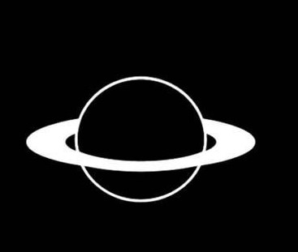

Planto helps to Calcualte your weight on different planets.

Planto
Your weight on differnet planets
Your weight is different on other planets in the Solar System because the gravity is different. To find out your weight on other planets without actually going there, you can use our free tool to find out your weight on different planets. The
units will remain same